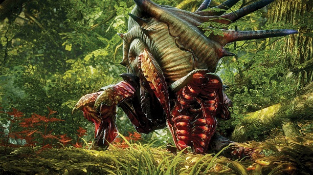

| HomeArmored Arachas | ||
|---|---|---|
|  | Bestiary Description:The Armored Arachas can be found just outside of Novigrad guarding a treasure. It's attack pattern is very simple, when you strike it three times it will attack back immediately. At times it will lunge at you, for quite a distance. You can use potions against it, any version of Golden Oriole will keep you from getting poisoned. Other than that you can use the terrain in your advantage, such as blocking the lunge with trees. This specific monster is level 23. | |
| Tactics:Attacks after 3 hits, and lunges for a long range occasionally. | ||
| Location: Velen. | ||
| Vulnerable Against: Golden Oriole, Insectoid Oil. | ||